Embodied Storyboarding for Animators
A workshop that asks what changes when storyboarding begins in the body rather than the head.
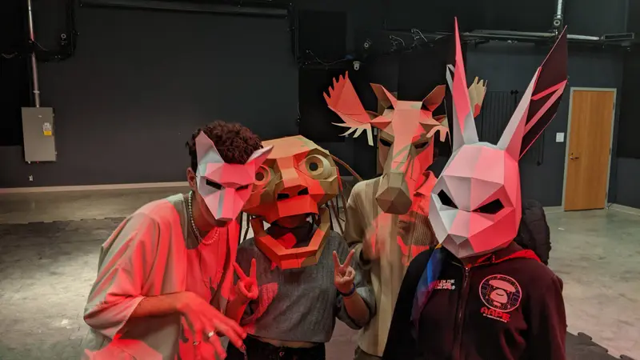
- Location
- Vancouver, BC
- Context
- Workshop for animation students, Emily Carr University
- Status
- Completed 2023
- Project type
- Workshop, embodied storytelling
- Role
- Designer and facilitator
- Format
- One afternoon, group-based
- Methods
- Movement and improv, mask work, puppetry, music, quiet reflection, rapid storyboarding
The project
Embodied Storyboarding for Animators is a workshop in which animation students explored a Cree Trickster story through movement, mask work and puppetry before drawing a single frame. The storyboards that followed were loose, intuitive and shaped by each person’s embodied experience.
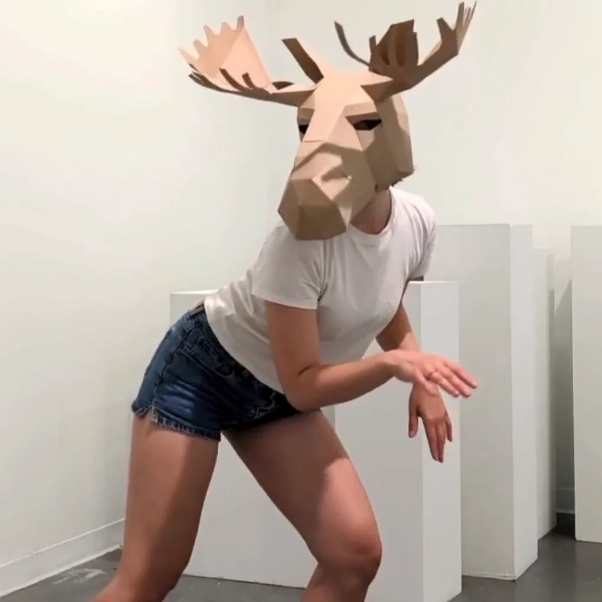
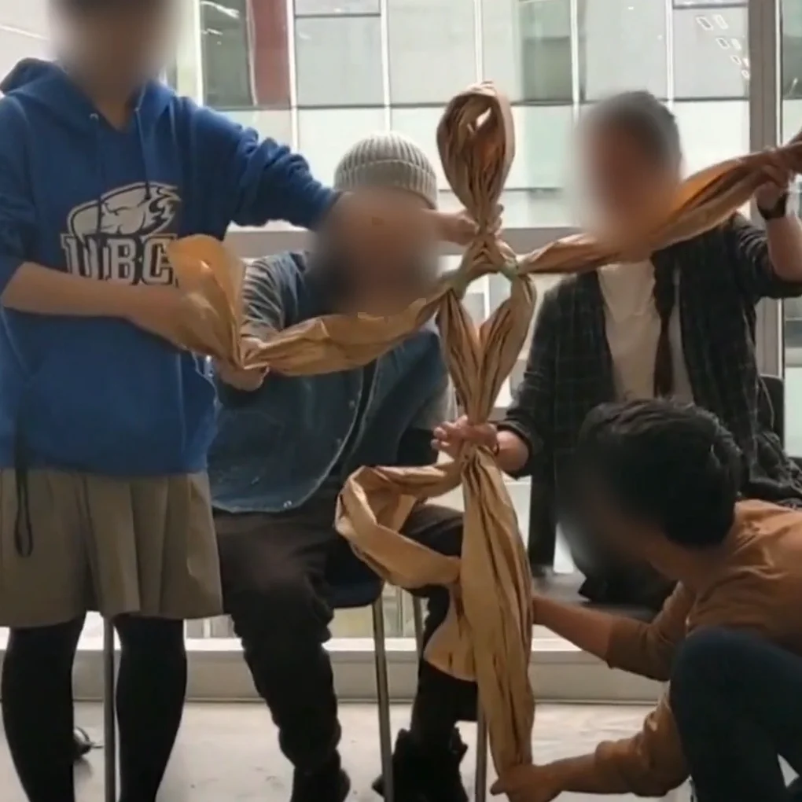
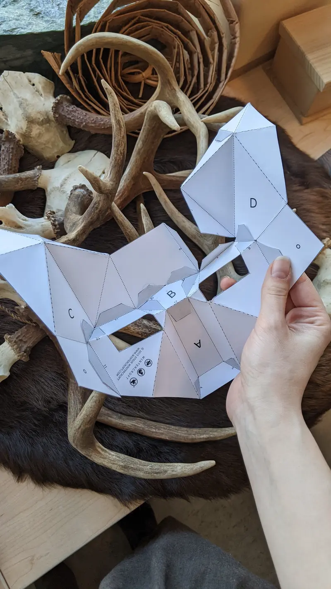
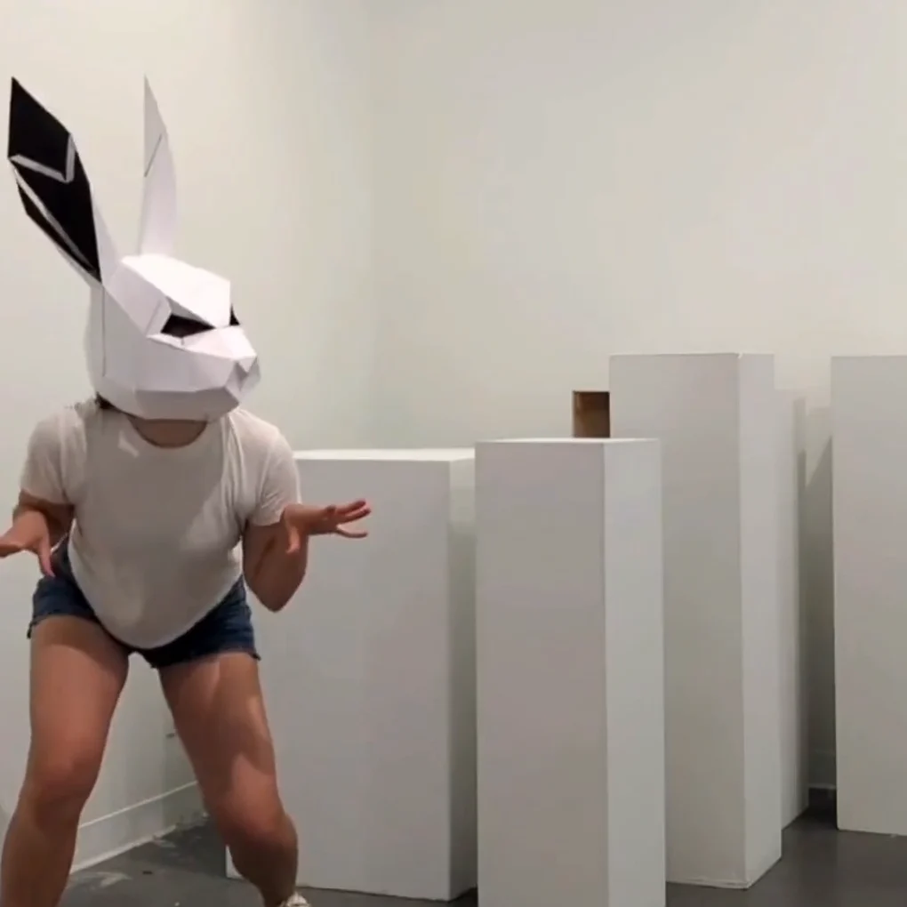
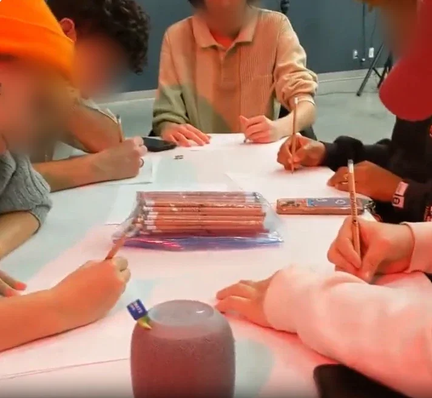
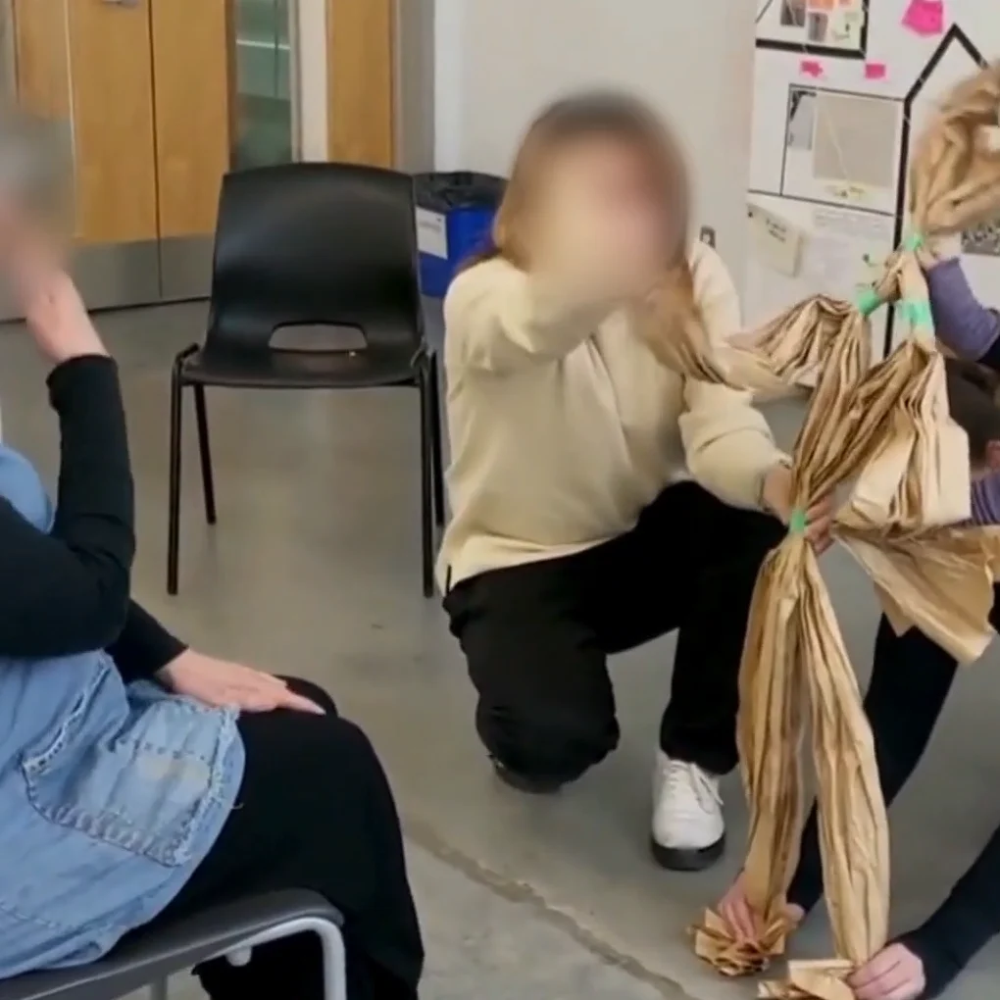
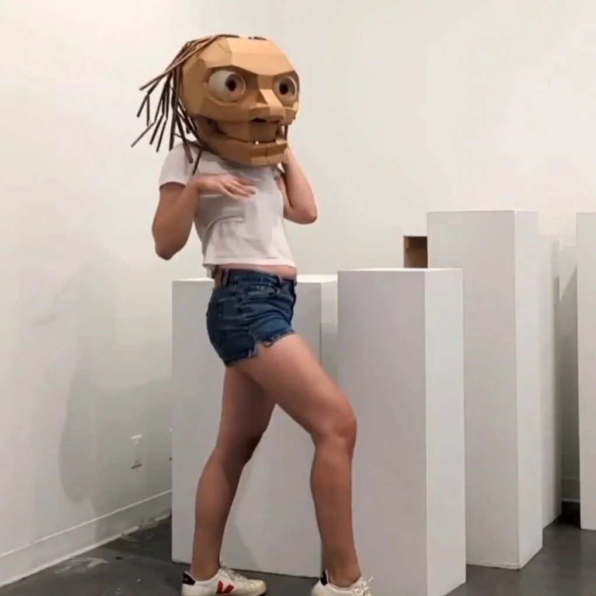
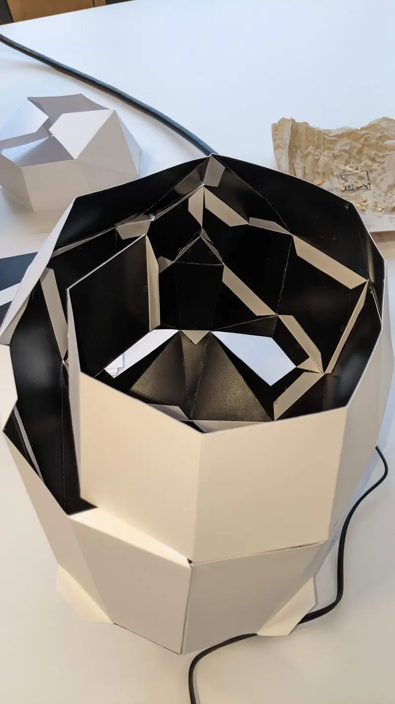
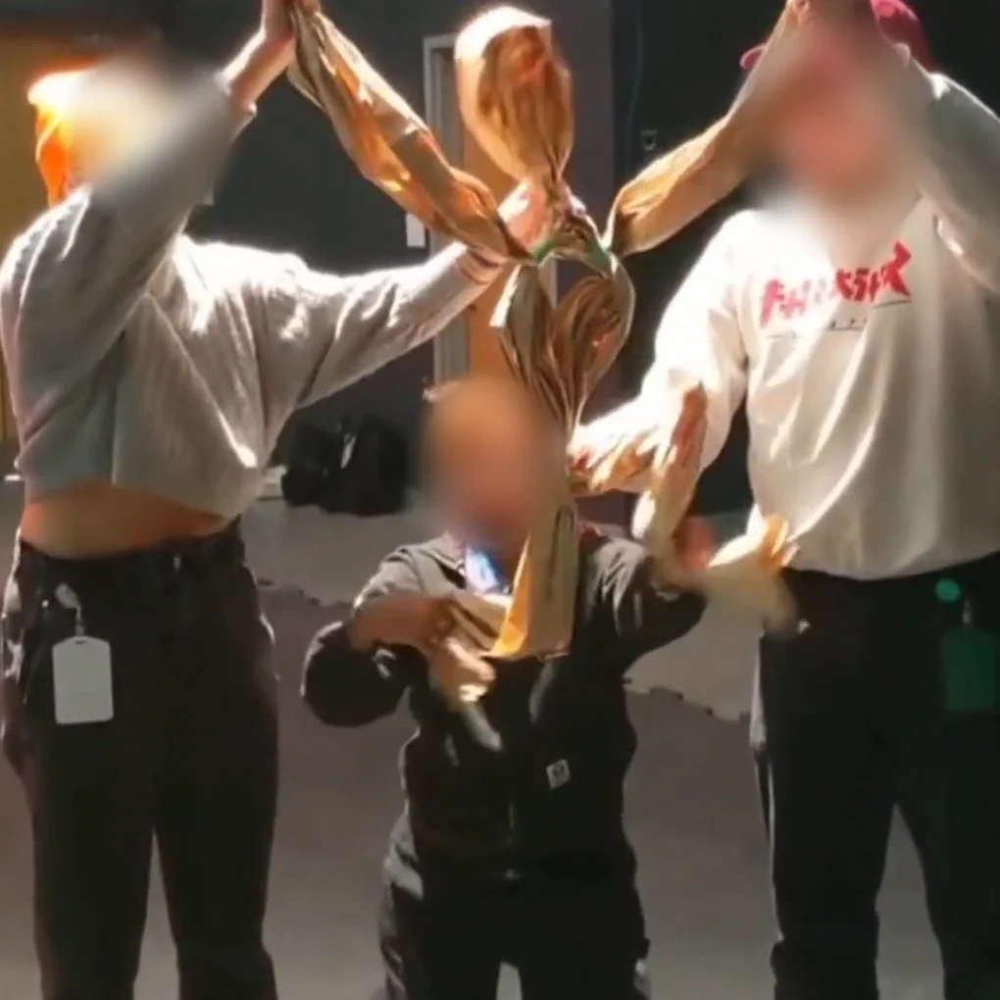
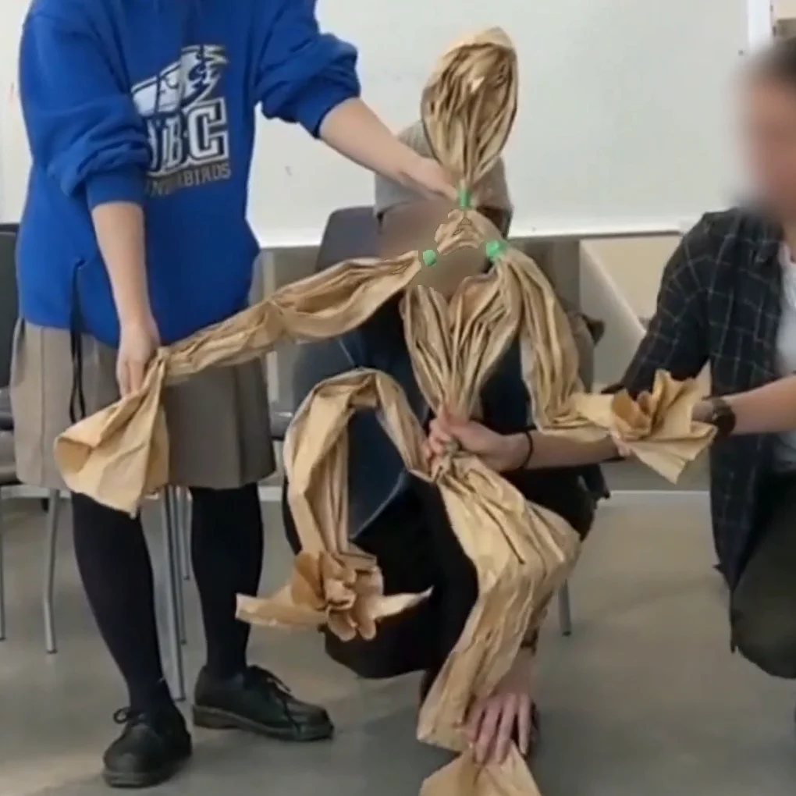
Significance
Storyboarding is often described as making the film without making the film, yet it is usually head-driven, done seated and from established methods. The workshop reverses that order, drawing on embodied practices from somatic psychology and theatre. It also holds that Cree storytelling principles are relational rather than exclusive: approached with care and context, they can inform how anyone engages story. Participants were not asked to reproduce Indigenous form, but to respond to the story and embody it in their own way.
How it was designed
The structure follows teachings shared by a Knowledge Keeper and pipe carrier: stories are not static myths of the past but live in the present moment; storytelling deepens relationship to land, to living beings and to each other; humour invites participation; and an intentional place for story-sharing matters. They shaped the space, the pacing and the room held for silence.
The story is an amalgamated telling of Wesakechak, drawn from Tomson Highway’s Laughing with the Trickster, Joyce Clouston’s writing on Stan McKay and Wilfred Buck’s teachings on Cree and Anishinaabe constellations. In a harsh winter the animals ask Wesakechak for warmer coats; the moose, stopping to eat on the way, arrives late and is left with one oversized coat that hangs loose around his shoulders. Its humour and consequence invite embodiment through posture, weight, cold and timing.
The workshop in four parts
- Movement and improvisationGuided warm-ups, games and music that energized the group and lowered inhibition.
- Mask workIn hand-made masks of the rabbit, fox, moose and Trickster, participants explored gait, breath and posture: walking as if holding a secret, discovering a feast or crossing an unfamiliar forest.
- PuppetryBreath, focus and weight brought simple puppets to life. The puppet’s neutrality allowed emotion without embarrassment or judgment.
- StoryboardingSeven minutes to draw, with music and lighting curated to hold the atmosphere. A questionnaire the next day traced lingering emotional and physical effects.
Storyboard of the Trickster and the Moose Story
A telling of the Cree story, with the storyboards drawn by workshop participants.
Outcome
The workshop showed that the environment for playful exploration matters as much as the activities, that rest and silence are productive in high-energy work and that interaction between participants shapes storytelling. Embodied storyboarding supplements traditional methods rather than replacing them, building ensemble understanding before production silos form and creating embodied memory that can shape pacing, posture and composition. I am continuing to develop it for studios, youth programs and collaborative storytelling.